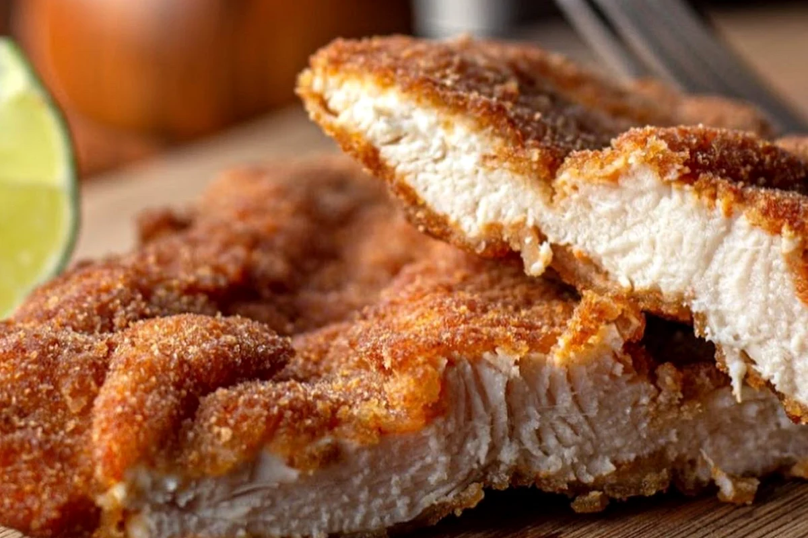
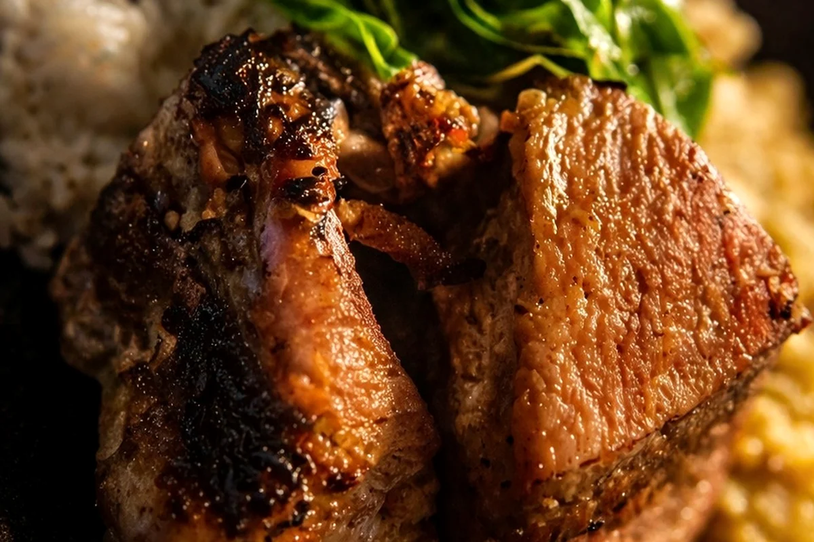
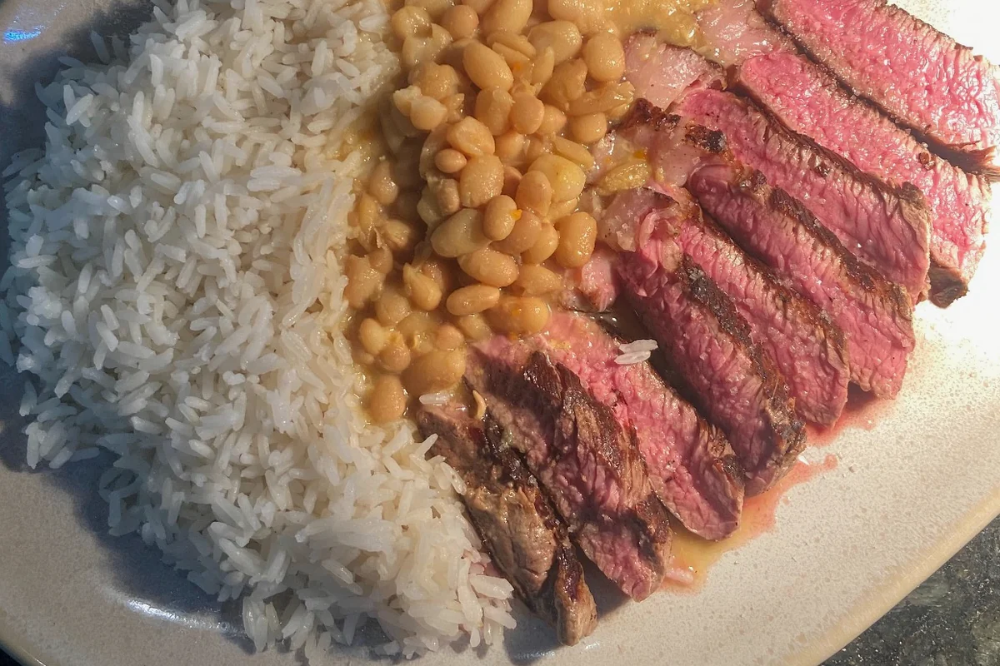
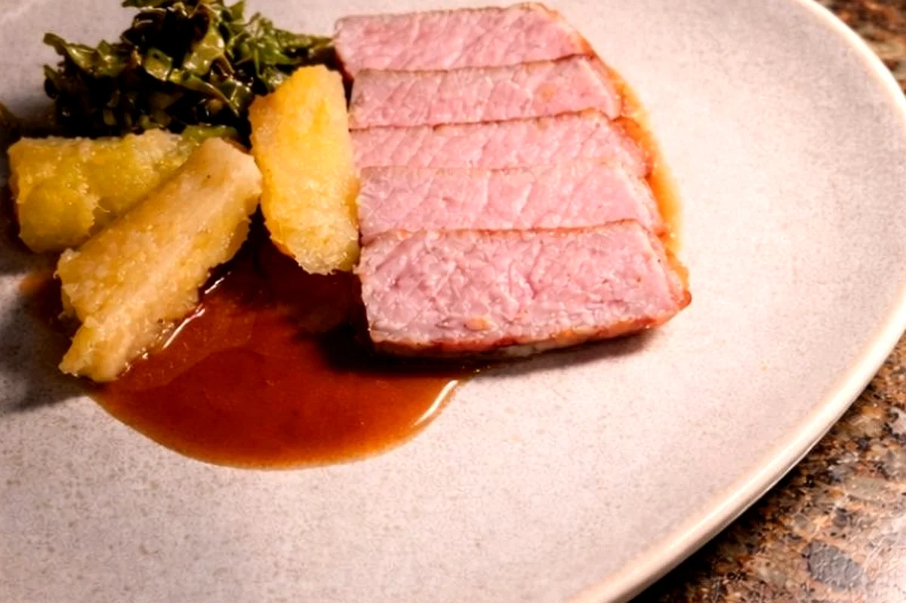
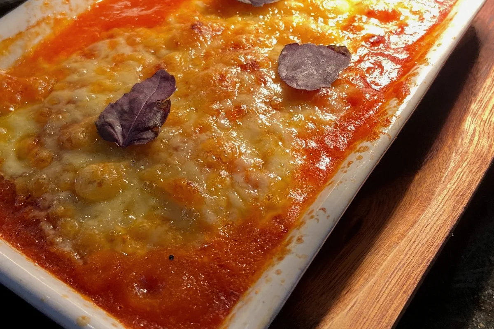

Primeira opção
PF do dia
Muda diariamente. Consulte pelo WhatsApp o prato e o preço do dia.
Perguntar no WhatsApp ↗Reserve sua mesa e deixe seu prato encaminhado. Nossa cozinha adianta o preparo e finaliza o pedido próximo ao horário informado. A proposta é diminuir a espera para você aproveitar melhor o almoço à mesa.
Entradas, bebidas e sobremesas ficam para a mesa. Aqui entram somente PF do dia, executivos e pratos do cardápio da estação.
Muda diariamente. Consulte pelo WhatsApp o prato e o preço do dia.
Perguntar no WhatsApp ↗Todos acompanham arroz, feijão, farofa e saladinha de entrada de cortesia.

Arroz, feijão e farofa · R$ 39

Arroz, feijão e farofa · R$ 42

Arroz, feijão e farofa · R$ 39

Arroz, feijão e farofa · R$ 62
Para alguns pratos, o cardápio também oferece versão para três pessoas. Se quiser essa versão, indique nas observações.

Grelhado, arroz com tarê caipira, fruta silvestre, amendoim tostado e vegetais do dia · R$ 69

Pato caipira desfiado, caldo de pato, glace, azeite de rúcula, mel de abelha nativa e cenoura glaceada · R$ 72

Bife de tira angus (225 g), glace, mandioca na manteiga defumada e vegetais do dia · R$ 96

Linguiça de camarão com porco, barriga grelhada, arroz, feijão, farofa, folha verde rasgada e zoiudo · R$ 59

Chorizo suíno, glace de cajuína, farofa de rapadura e vegetais do dia · R$ 82

Frango empanado em farinha de milho, molho de tomate caseiro, queijo gratinado, arroz e batata rústica · R$ 72
Sim. O pedido antecipado é uma facilidade da Família Tio Dinho. Você pode reservar a mesa e escolher o que comer no restaurante.
O PF muda e não é atualizado diariamente no site. Use o botão de WhatsApp ao lado do PF para perguntar qual é o prato do dia.
A reserva para o mesmo dia deve ser enviada até as 11h e o primeiro horário disponível é 11h45. Depois das 11h, consulte diretamente a disponibilidade pelo WhatsApp.
Sim. Escolha a data e o horário desejados no início da página.
Sim. Use os botões + e − para informar a quantidade de cada prato para a mesa.
Informe alergias, intolerâncias e demais restrições no campo específico ao finalizar o pedido, indicando a quem se aplica.
Esses itens podem ser escolhidos no restaurante. Se quiser adiantar alguma solicitação, use o campo de observações.
Não enviamos uma mensagem de confirmação em condições normais. Entraremos em contato somente se houver algum problema com a reserva, o pedido ou a disponibilidade de algum item.
Os pedidos estão sujeitos à disponibilidade em estoque. Se for necessário alterar algo, entraremos em contato pelo WhatsApp informado na reserva.
Não. O Peça Antes organiza sua reserva e antecipa o preparo do pedido; o pagamento é feito no restaurante.